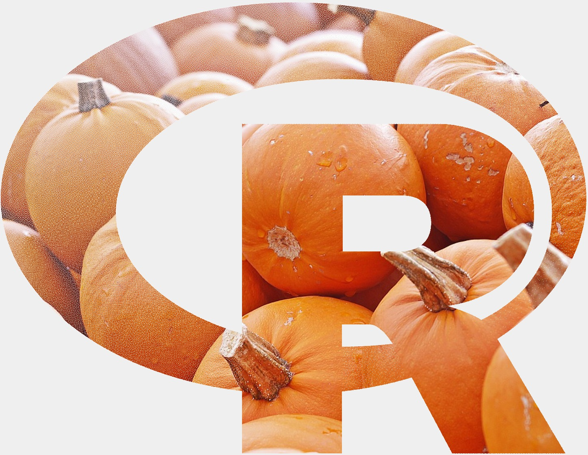
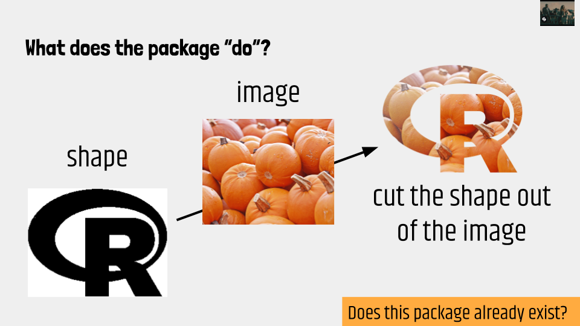

In this workshop, we’ll learn all about the wonderful world of R packages and what you need to know to get started on your package development adventure. Maybe you want to share a new method you’ve developed? Maybe you’ve got an interesting set of data that you’d like to others to be able to access? Maybe you’ve got an idea for a new package but are not sure how to get started? Or maybe you just want a non-scary place to hang out on Halloween? Come along and learn more about R package development within a fun and supportive learning environment.
Website and workshop materials developed by Anna Fergusson for the R-Ladies Auckland October 2019 Meetup.
I normally provide slides for my workshops but this workshop was nearly entirely based on the slides prepared by Earo Wang in May 2018 called Everything you need to know to create your own R package, so I’ll just link to those slides! The rest of this writing are my notes about what (small) things I changed about the workshop designed by Earo.
In my slides, I had different music tracks queued up for “pivotal” moments in our package development adventure. The first track, was of course, the name of the workshop:
We then talked about how packages come in all shapes and sizes, and you could start by “bundling up” some of your favourite things into your own personal package! Think of it as a gift to your future self.
The magick package is one of my favourite packages, and I use it all the time to develop aspects of my teaching materials. So, for this workshop I used an example of a “one function” package to take participants through (rather than the package Earo used). I’ve developed R packages before quite haphazardly, so to prepare for this workshop, I followed Earo’s slides to package up one of my magick-based functions. This was a good strategy, as it allowed me to identify some aspects where I thought participants might need a little bit more info.
So our goal was to re-create the package that I used to create this:

What the package/function actually does is shown below in one of the few original slides from my workshop!

In terms of scoping out whether your new amazing package doesn’t already kind of exist, I recommended using the reverse dependencies of the key packages your package will import. For me, that was the magick package. I reviewed other packages that relied heavily on the magick package to see if they already provided the kinds of functionality I want.
To segway to the important naming phase of our package development, I used the track below to introduce the name I had chosen:
I also provided a link to an interesting post by Nick Tierney on naming R packages. I totally forgot to use this track when we were discussing naming packages:
If you haven’t worked it out yet - the package is called cuttingshapes!
We then followed the steps Earo outlined for creating a package within RStudio using the very helpful packages usethis and devtools. One thing I would change for next time is to include examples/screenshots of using the menu options under Build in the RStudio GUI, as they also show the shortcuts for various things like “Load all” etc. I also explained a little bit more about what load_all() does, in that it tries to simulate what happens when a package is installed and loaded with library().
I also (totally on purpose!) left out importing one of the packages needed for the cuttingshapes package so that we got an error when we tried to run our function. This gave participants an opportunity to go back to the R script for the function, identify which functions/packages needed to be imported and practice the steps just used.
We did cover using roxygen comments to create documentation for the package, but this aspect was not really that fun, and I think even less fun when it’s not your package. So it kind of mostly felt like I was just dictating what we could write. However, it was exciting that we could call ?cut_shape and have documentation appear!
I had this song queued for when we built and checked the package:
I knew there were going to be some notes generated about the package from the checking process (two were about global variables, one was about the image URL being too long to fit on the line), so had the “fix” ready to go so we could update the R script for our function, and re-build and check the package.
We then talked about how to make your package useful for others, including README files, vignettes, and creating a website using the pkgdown package.
Due to time constraints and the very intro nature of the workshop, we didn’t go into any details about unit tests. However, I included all of the excellent resources that Earo linked to in her slides for further reading.
All in all, I think the workshop went pretty well. I’m happy I decided to use a “one function” package to work through for the workshop, using a function that we could try out and make fun stuff with during the workshop (pumpkins + cats). It was Halloween and I think the goal to cover just some of the key ideas for developing R packages in a non-scary way was achieved!